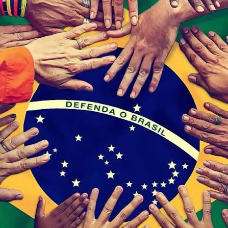

Bom, neste site iremos explicar o seu motivo.
A música é um dos elementos que se consolidaram desde os primórdios da humanidade. Ela esteve presente em diferentes povos e culturas ao
longo da história, sendo utilizada por povos indígenas (nossos povos originários), pelos incas e por muitas outras sociedades antigas
e atuais, chegando também às novas gerações, como a Geração Z.
A música é um dos elementos que se consolidaram desde os primórdios da humanidade. Ela esteve presente em diferentes povos e culturas ao
longo da história, sendo utilizada por povos indígenas (nossos povos originários), pelos incas e por muitas outras sociedades antigas
e atuais, chegando também às novas gerações, como a Geração Z.
A música sempre trouxe e ainda traz um grande repertório de histórias, sentimentos e acontecimentos. Ela pode representar uma cidade, um
estado, um país ou até mesmo o mundo como um todo. Por meio dela, diversos temas importantes podem ser abordados, como fome,
desigualdade, preconceito, desastres naturais, guerras e outros problemas sociais.
Mas a música não fala apenas sobre problemas. Ela também nos permite expressar nossos sentimentos, sejam eles de amor, raiva, dor,
tristeza, felicidade ou saudade. Dessa forma, ela se torna uma maneira de comunicação e de liberdade de expressão
A música também está diretamente ligada à história e à identidade de diferentes grupos. Em uma igreja, por exemplo, as músicas podem
representar a fé, os valores e as crenças das pessoas que as cantam. Em outras situações, uma música pode representar um time, uma
comunidade, uma cultura ou uma época histórica.
Um exemplo é "Cálice", de Chico Buarque e Gilberto Gil, uma música associada ao período da Ditadura Militar brasileira e que se tornou um
símbolo de resistência e crítica à repressão. Já Djavan é conhecido por suas músicas que exploram sentimentos, relacionamentos e diferentes
formas de amor.
Outro exemplo é o funk brasileiro, que possui fortes raízes nas comunidades e se tornou uma importante forma de expressão cultural. Por meio de diferentes artistas e MCs, o gênero aborda experiências, desigualdade social, dificuldades e a realidade vivida em muitas comunidades brasileiras.
Um exemplo marcante é a música “Rap da Felicidade”, de Cidinho & Doca, que retrata a realidade das favelas, abordando temas como violência, desigualdade social, preconceito e o desejo por uma vida mais digna. A música demonstra como o funk pode ser utilizado não apenas como entretenimento, mas também como uma forma de dar voz às comunidades e denunciar problemas sociais.
A música também pode representar uma identidade coletiva, unindo pessoas que compartilham os mesmos valores, sentimentos ou pertencem a determinado grupo. O hino do Corinthians, por exemplo, faz parte da identidade do clube e de seus torcedores, sendo reconhecido há décadas e utilizado para demonstrar orgulho e pertencimento.
Para que você possa desfrutar dela e ouvi-lá, basta acessar este link.Da mesma forma, o Hino Nacional Brasileiro representa simbolicamente o país e está presente em diferentes momentos oficiais, como cerimônias, eventos públicos e celebrações nacionais. Dessa maneira, a música pode fortalecer o sentimento de união, pertencimento e identidade entre as pessoas.

Para que você possa desfrutar dela e ouvi-lá, basta acessar este link.Além disso, a música está presente em praticamente todos os lugares. Ela aparece em filmes, séries, jogos, propagandas, cerimônias, festas e redes sociais. Muitas vezes, uma simples introdução musical já é suficiente para reconhecermos uma obra ou lembrarmos de determinado momento.Também podemos encontrar essa relação entre música e cultura em outros países.
Grupos como o TWICE, por exemplo, fazem parte da indústria musical sul-coreana e mostram como a música pode ultrapassar fronteiras, conectar pessoas de diferentes países e aproximar culturas.
Desde os povos originários até os artistas atuais, a música continua sendo uma forma de expressão, comunicação, memória, identidade e conexão entre pessoas.
Por isso, ouvir uma música não significa apenas escutar sons.
É também uma oportunidade de conhecer uma história, compreender uma cultura, perceber sentimentos e entender aquilo que outra pessoa ou grupo deseja transmitir.
A música está em praticamente tudo.
Ela nos acompanha, representa quem somos e, muitas vezes, conta aquilo que as palavras sozinhas não conseguem explicar.